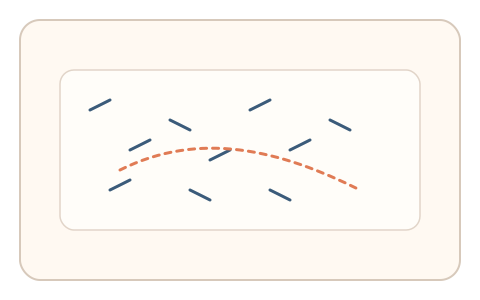
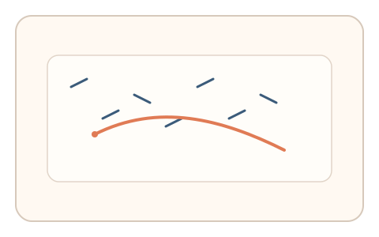
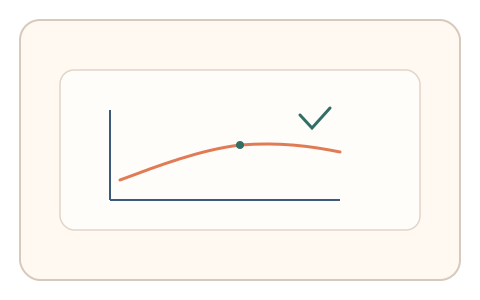

#61
视觉思考范式：Gestalt/对称/频率
已扩展
连续路径追踪
在短线段中描出唯一平滑路径，利用起笔延迟与修正节律验证良好连续性整合。
概念原文
大量短线段中只有一条能形成平滑连续路径，用户快速描出该路径。记录起笔延迟、路径连续性与修正节律。
依赖视觉“良好连续性”整合能力，而非图形识别。
研究背景
良好连续性是典型的 Gestalt 规则，人类能迅速把分散线段整合为平滑路径。通过记录起笔延迟、路径连续性与修正节律，可形成稳定的视觉整合特征。
核心机制
- 在大量短线段中嵌入一条可连续路径。
- 用户快速描出该路径。
- 记录起笔延迟、路径连续性与修正。
- 分析连续性指标与节律特征。
用户流程
- 步骤 1：用户看到混杂短线段。
- 步骤 2：用户描出连续路径。
- 步骤 3：系统分析路径连贯性并判定。
判定信号
路径连续性与曲率变化
真实整合路径通常平滑且连续。
修正节律与停顿
真实追踪会出现短暂停顿与纠偏。
判定逻辑
结合路径连续性、曲率平滑度与修正节律判定；过度机械或随机判异常。
对抗面
- 脚本直接计算连续路径
- 重放真实用户的描绘轨迹
防御与缓解
- 随机化线段方向与密度
- 加入诱饵路径与局部扰动
- 叠加微时序与轨迹抖动进行多信号判定
可达性与风险
提供更粗线段或点击式路径选择，避免对精细描绘用户造成负担。
- 高密度线段增加认知负担
- 触控设备精度影响路径特征
可视化状态

状态 1：线段混杂
短线段中隐含一条连续路径。

状态 2：路径描绘
用户描出平滑连续路径。

状态 3：连续性判定
分析曲率与修正节律。
参考资料
Gestalt psychology
说明良好连续性与路径整合。
Perceptual organization
说明视觉整合与连续性原则。